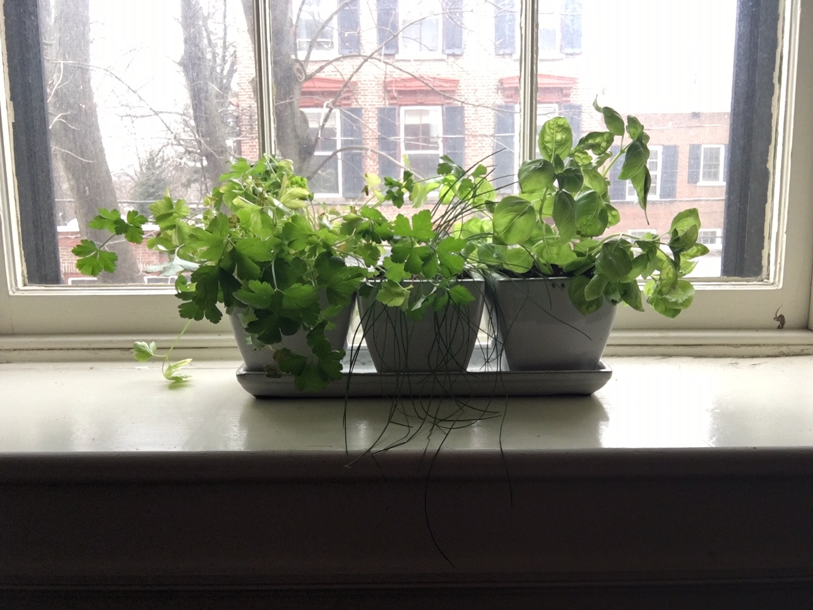

1. Materials cost less than $10 and include a 2-5 gallon bucket with lid and a foot of rubber hose. To complete the project you will need an utility knife (drill optional).
Urban Gardening
How to grow your own produce with limited space
Hanging Tomato Plants
Hanging tomato plants are a perfect option if you do not have a yard or even room for potted plants.
Here is how to make a hanging tomato plant:
Growing Vegetables in Pots
Many vegetables can easily be grown in pots.
You can either start them from seed or by planting a
starter plant.
Best Vegetables to Grow in Pots
Tomatos (small variety like cherry or grape tomatos)
Peppers (bell peppers, jalapenos, etc.)
Beans (bush beans or pole beans)
Leafy Greens (spinach, kale, leaf lettuce)
Garden Boxes
If you have a small amount of space outside, a raised garden box is a great option!


Check out this video on how to build a garden box for only $15
Windowsill Herb Garden

Not many things are better for cooking than fresh, homegrown herbs.
Now you can enjoy fresh herbs all year around with your own windowsill herb garden.
Herbs can be either planted from seed or grown from a starter plant.
Picture: parsley, chives, basil